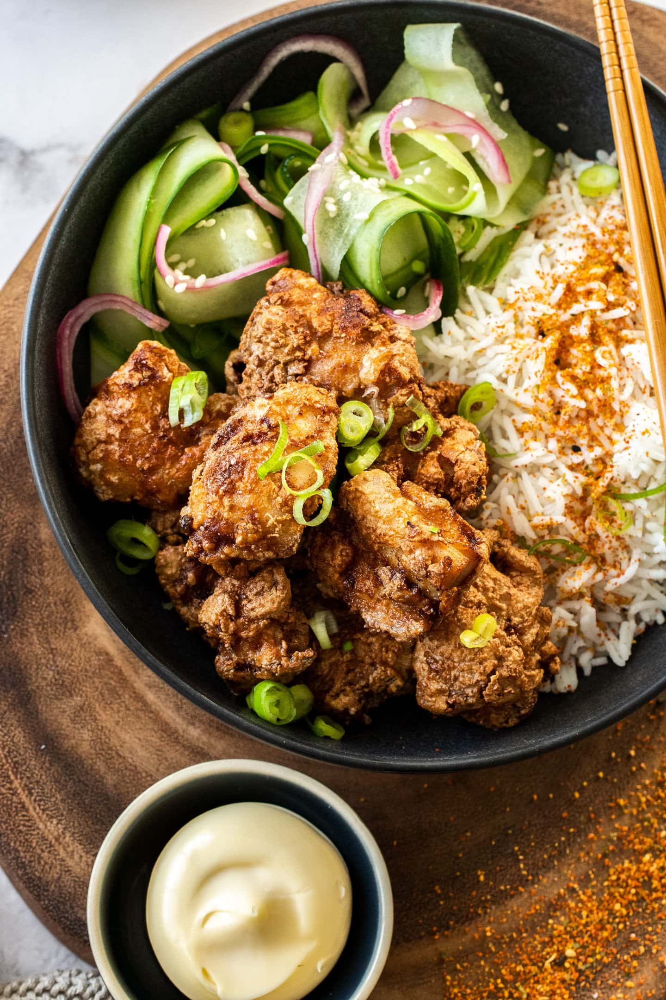

Chicken Karaage

Description
Here is a great recipe!
Ingredients
- 1 clove garlic, finely grated
- 1 tablespoon finely grated fresh ginger
- 3 tablespoons soy sauce
- 3 tablespoons sake
- 1 tablespoon mirin
- 1/8 teaspoon sesame oil
- 1/4 teaspoon ground black pepper
- 1 pinch cayenne pepper
- 1/2 teaspoon white sugar
- 1/4 teaspoon kosher salt
- 1 1/4 pounds boneless,skinless chicken thihgts cut into 2-inch pieces
- 1 cup potato starch
- 1 quart canola oil, or as needed
Steps:
- Mix 1 1/2 tablespoon soy sauce, 1 tablespoon honey, garlic, and ginger together in a
bowl. Add chicken; turn to coat. Marinate in the refrigerator, 8 hours to overnight.
- Whisk egg in a bowl until smooth.
- Pour panko bread crumbs into a shallow bowl. Dip chicken pieces in whisked egg and roll in panko until coated.
- Heat oil in a deep-fryer or large saucepan to 350 degrees F (175 degrees C). Cook chicken in batches in the hot oil
until golden brown, about 5 minutes. Transfer to paper towels to drain excess oil.
- Mix Japanese mayonnaise, 2 tablespoons honey, Dijon mustard, mirin, and 1 tablespoon soy sauce together to make sauce.
Pour sauce over chicken.